This page documents my progress through the OverTheWire Bandit wargame, including Linux fundamentals, command-line usage, file permissions, networking concepts, and problem-solving techniques.
The bandit wargame starts off incredibly simple, with the first few levels teaching the basics of navigating the file system, but gets progressively more difficult as the game goes on.
Objective:
Log into the Bandit server using SSH and retrieve the password
for the next level from the readme file.
Concepts Learned:
Commands Used:
Explanation:
I created a directory for future passwords,
connected to the remote Linux server using SSH,
listed the files in the current directory,
and used the cat command to read the contents
of the readme file containing the password
for the next level.
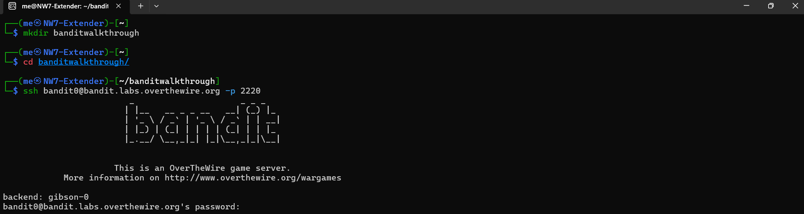
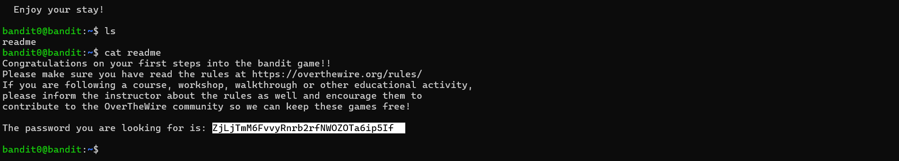
Objective:
Retrieve the password for the next level located in the file named ".-".
Concepts Learned:
Commands Used:
Explanation:
Hidden files in Linux begin with a dot (.). Using "ls -a" lists all files,
including hidden ones. The "cat" command is then used to read the content
of the file containing the password for the next level.
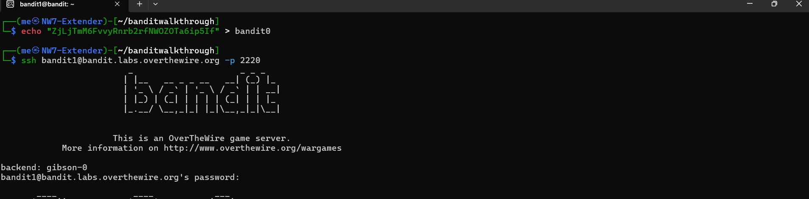
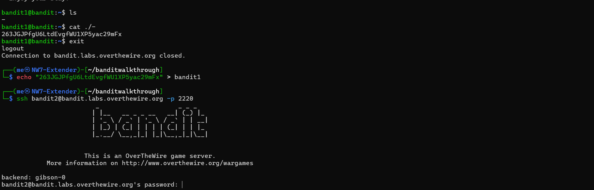
Objective:
Retrieve the password for the next level from a file called "spaces in this filename".
Concepts Learned:
Commands Used:
Explanation:
File names with spaces require special handling. You can enclose the filename
in quotes or use backslashes to escape spaces. Reading the file with "cat"
reveals the password for the next level.
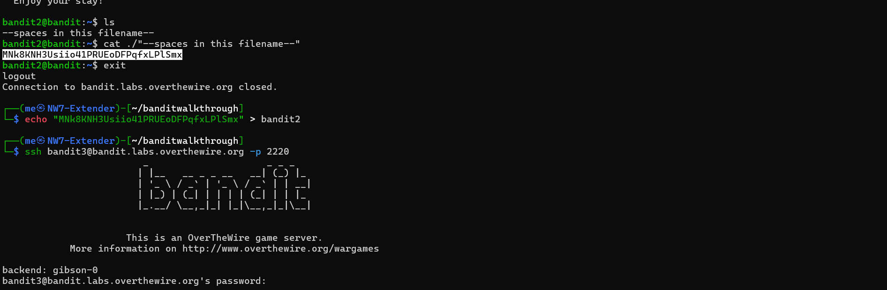
Objective:
Retrieve the password for the next level from the hidden file ".Hiding-From-You"
located in the "inhere" directory.
Concepts Learned:
Commands Used:
Explanation:
Hidden files in Linux start with a dot (.) and are not shown by a normal "ls" command.
Using "ls -a" reveals all files, including hidden ones. Once found, "cat" can be used
to read the contents of ".Hiding-From-You" to get the password for the next level.
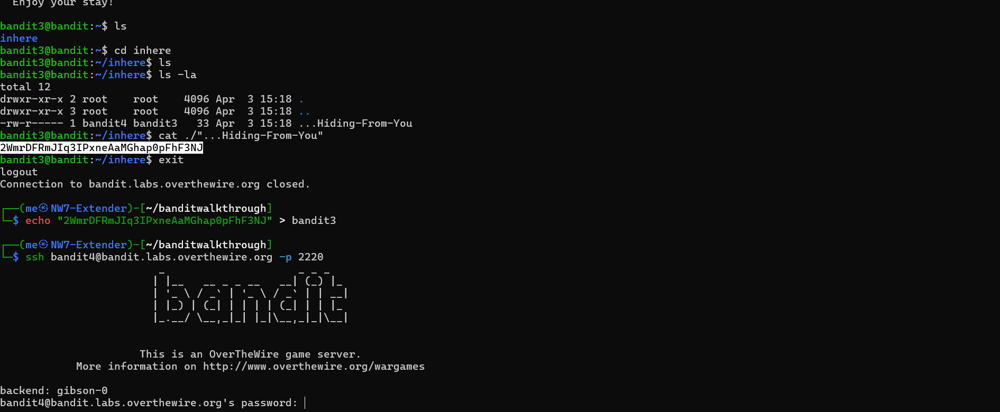
Objective:
Retrieve the password for the next level from the file with an unusual name "-" in the "inhere" directory.
Concepts Learned:
Commands Used:
Explanation:
Some filenames in Linux can start with a dash (-), which can be interpreted as an option by commands.
Prefixing the filename with "./" tells the shell to treat it as a file in the current directory,
allowing "cat ./-" to read the contents and retrieve the password for the next level.
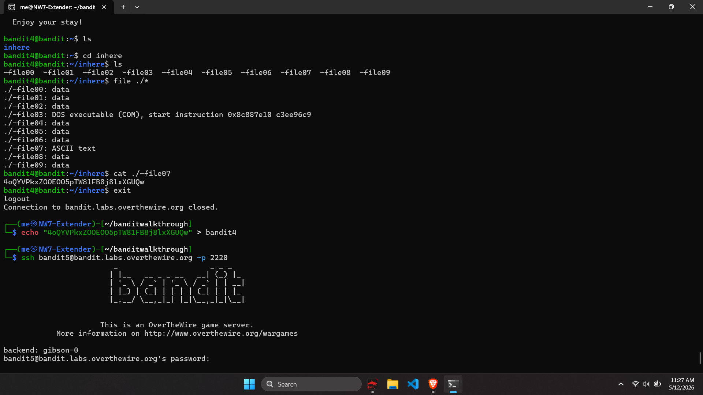
Objective:
Retrieve the password for the next level from a file hidden somewhere inside the "inhere" directory.
The file is 1033 bytes in size, not executable, and readable as text.
Concepts Learned:
findfind with \! for negationcatCommands Used:
Explanation:
This level introduces the find command to locate files based on specific criteria.
Here, we search for a file that is exactly 1033 bytes (-size 1033c), not executable
(\! -executable), and readable (aka some kind of text file)(-readable). Once find
returns the filename, we use cat to display its contents and retrieve the password
for Bandit Level 6.
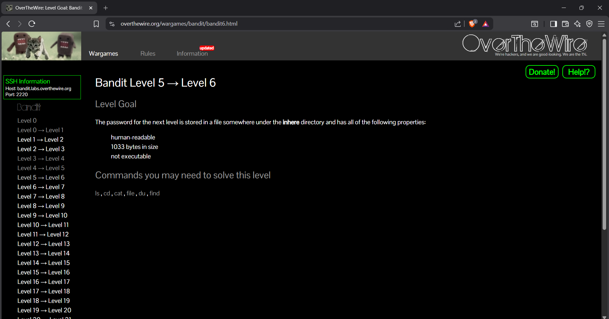
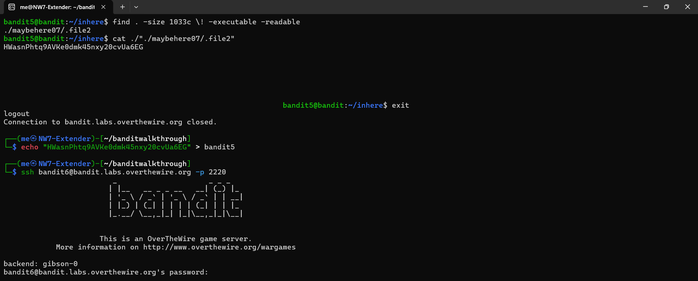
Objective:
Retrieve the password for the next level by finding a file somewhere on the server that is owned by user "bandit7", owned by group "bandit6", and is 33 bytes in size.
Concepts Learned:
find2>/dev/nullcatCommands Used:
Explanation:
This level expands on the use of the find command by searching the entire filesystem
instead of a single directory. The command filters files that are owned by user
bandit7, belong to group bandit6, and are exactly 33 bytes in size.
Since many directories cannot be accessed by the current user, permission errors appear frequently.
Redirecting errors with 2>/dev/null hides those messages, making the output easier
to read. Once the correct file is found, cat is used to display the password for
Bandit Level 7.
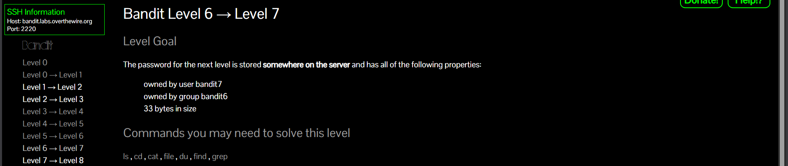
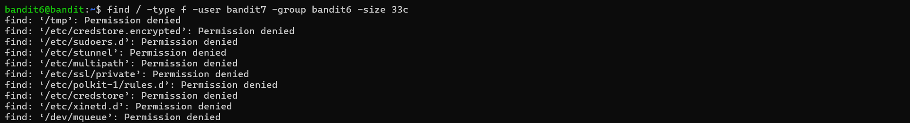
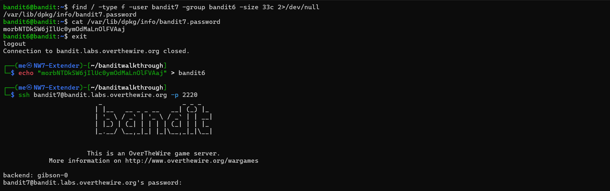
Objective:
Retrieve the password for the next level from the file "data.txt" next to the word "millionth".
Concepts Learned:
grepCommands Used:
Explanation:
This level introduces the grep command, which is used to search through files for
specific text patterns. By searching data.txt for the word
"millionth", the matching line is displayed along with the password for
Bandit Level 8.
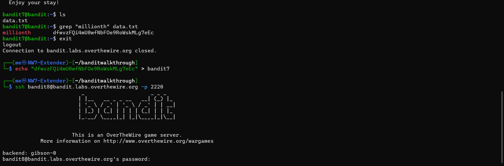
Objective:
Retrieve the password for the next level from the file "data.txt".
The password is the only line of text that occurs exactly once.
Concepts Learned:
sortuniq|)Commands Used:
Explanation:
This level introduces the concept of piping commands together. The
sort command organizes all lines in the file alphabetically, which is required
for uniq to work properly. The uniq -u command then filters the
results and displays only the line that appears exactly once, revealing the password for
Bandit Level 9.
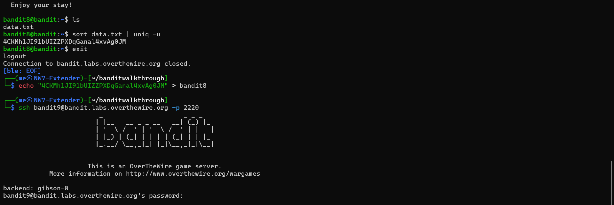
Objective:
Retrieve the password for the next level from the file "data.txt".
The password is stored in one of the few human-readable strings and is preceded by several "=" characters.
Concepts Learned:
stringsgrep|)Commands Used:
Explanation:
This level introduces working with binary or non-human-readable files. The
strings command extracts readable text from data.txt, while
grep searches through that output for lines containing multiple "=" characters.
The matching line reveals the password for Bandit Level 10.
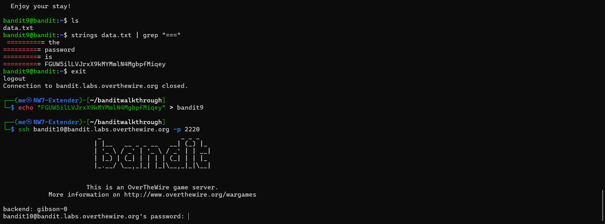
Objective:
Retrieve the password for the next level from the file "data.txt",
which contains base64 encoded data.
Concepts Learned:
base64 commandCommands Used:
Explanation:
This level introduces Base64 encoding, a method used to represent binary data as readable text.
The base64 -d command decodes the contents of data.txt back into
plain text, revealing the password for Bandit Level 11.
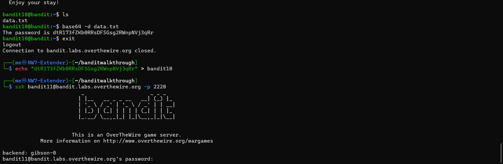
Objective:
Retrieve the password for the next level from the file "data.txt",
where all lowercase and uppercase letters have been rotated by 13 positions using ROT13 encryption.
Concepts Learned:
Commands Used:
Explanation:
This level introduces the ROT13 cipher, a simple substitution cipher that rotates each letter
by 13 positions in the alphabet. After displaying the contents of data.txt,
the encoded text can be copied into CyberChef and decoded using the ROT13 operation.
The decoded output reveals the password for Bandit Level 12.
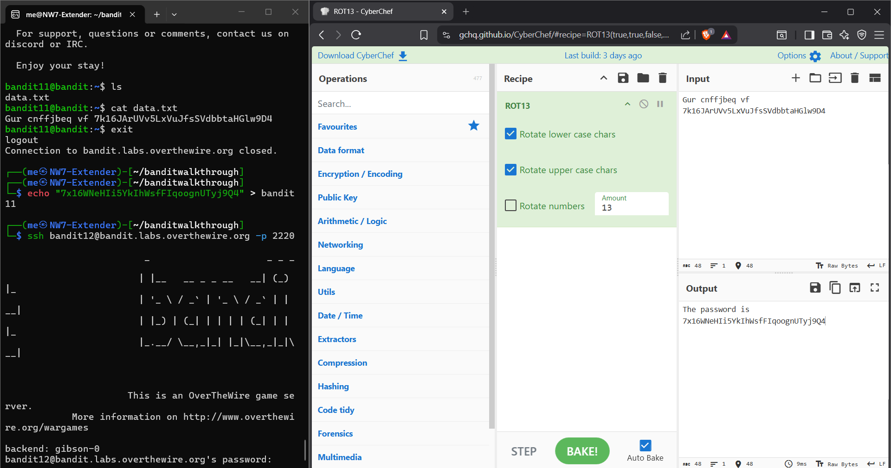
Objective:
Retrieve the password for the next level from the file "data.txt",
which contains a hexdump of a repeatedly compressed file.
Concepts Learned:
xxdfilemvmktempCommands Used:
Explanation:
This level is a multi-step exercise in identifying and extracting compressed files.
The process begins by creating a temporary working directory and reversing the hexdump
in data.txt using xxd -r. The resulting file is repeatedly analyzed
with the file command to determine its format, then renamed and decompressed
using the appropriate extraction utility such as gunzip,
bunzip2, or tar. After several layers of compression are removed,
the final file contains the password for Bandit Level 13. The commands listed above are the
necessary commands to complete the room, however when doing it yourself it is necessary to
use the ls and file command multiple times in order to find the file name/type. I used -d for
decode multiple times in the example, however doing it the way explained in the above code
section works as well.
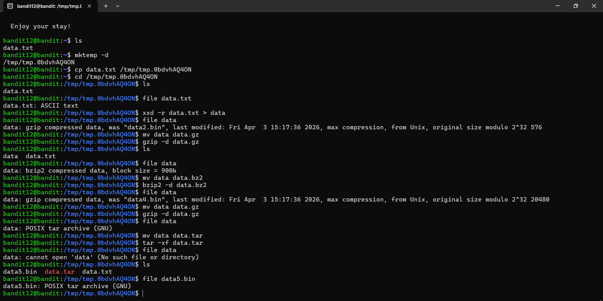
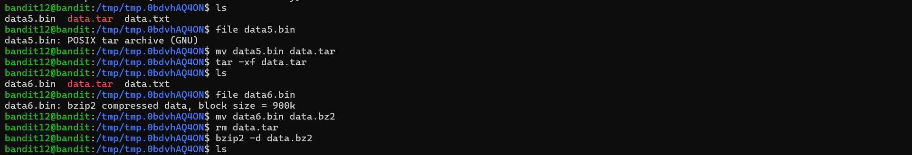
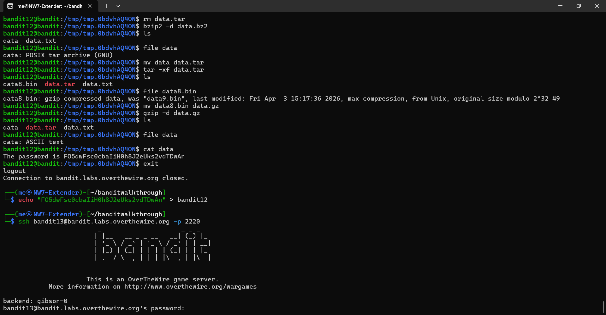
Objective:
Retrieve the private SSH key for the next level and use it to log in as user "bandit14".
The actual password for Bandit Level 14 is stored in /etc/bandit_pass/bandit14
and can only be accessed by user "bandit14".
Concepts Learned:
catnanochmod 700-i and -pCommands Used:
Explanation:
In this level, the private SSH key is the credential for logging in as user "bandit14".
First, use cat to copy sshkey.private from Bandit 13's home directory to
your local machine. Next use nano to create a file on your local machine and paste the key.
Next, set secure permissions on the key with chmod 700 to
prevent SSH from rejecting it. Finally, use ssh bandit14@localhost -p 2220 -i [file_name]
to authenticate as bandit14 and access the password stored in
/etc/bandit_pass/bandit14. Note that you cannot login to bandit14 directly from
bandit13 using the private key, as explained in the HINT file.
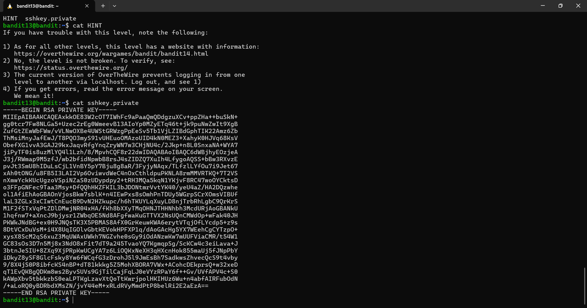
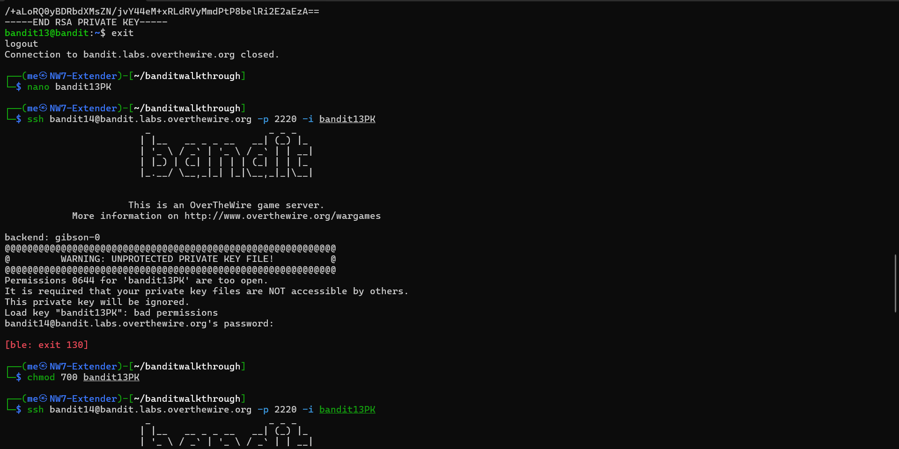
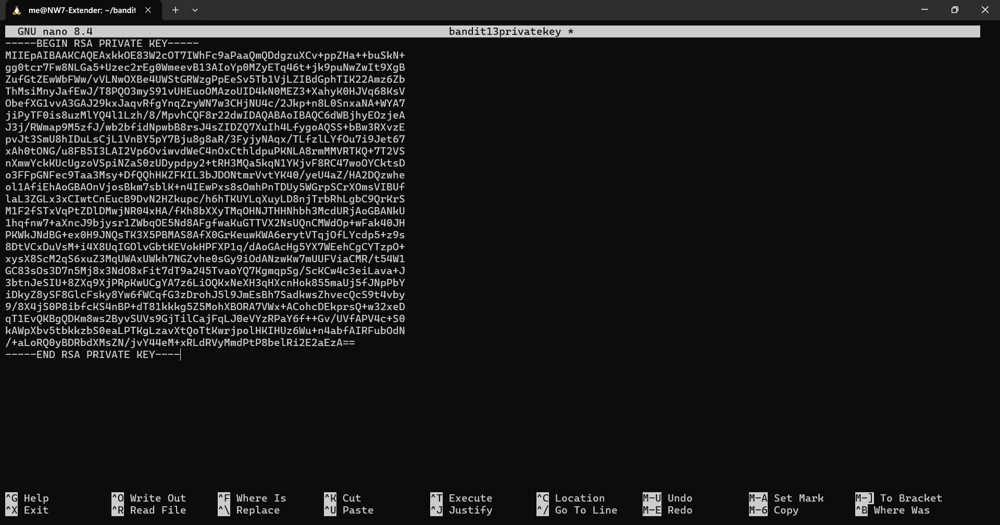
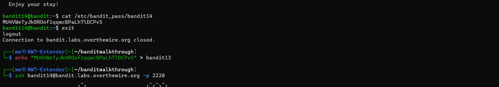
Objective:
Retrieve the password for the next level by submitting the current level's password
to port 30000 on localhost.
Concepts Learned:
nc (Netcat)Commands Used:
Explanation:
Bandit Level 14 introduces connecting to network services using nc (Netcat).
By running nc localhost 30000 and submitting the password for Bandit Level 14,
the service responds with the password for Bandit Level 15. This demonstrates a simple TCP
client-server interaction on the local machine. There are other ways to complete this room,
however I find this to be the most simple.
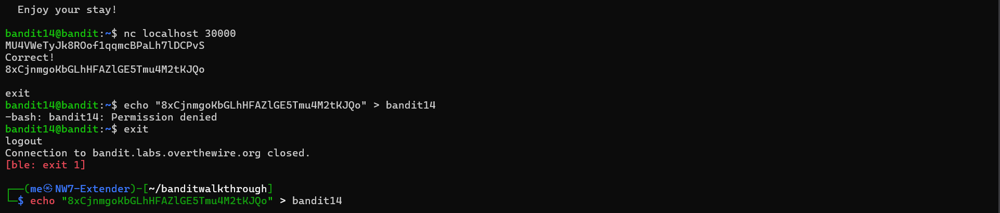
Objective:
Retrieve the password for the next level by submitting the current level's password
to port 30001 on localhost using SSL/TLS encryption.
Concepts Learned:
openssl s_clientCommands Used:
Explanation:
Bandit Level 15 introduces secure network communication. Using
openssl s_client -connect localhost:30001, you establish an encrypted
connection to the service running on port 30001. By submitting the Bandit 15 password over
this connection, the service responds with the password for Bandit Level 16. This demonstrates
how SSL/TLS encryption can be used to secure data transmitted over a network.
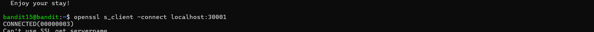
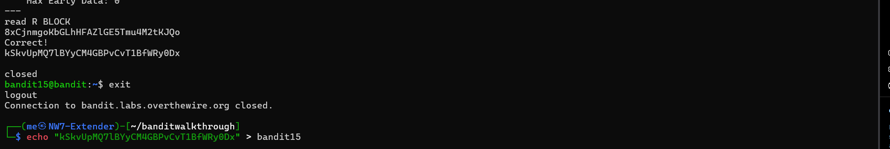
Objective:
Retrieve the password for the next level by submitting the current level's password
to the correct port on localhost (between 31000 and 32000). Identify which port is
listening and which server uses SSL/TLS. The server that responds with the credentials
for Bandit 17 must be identified.
Concepts Learned:
nmapopenssl s_clientCommands Used:
Explanation:
Bandit Level 16 introduces the concept of multiple local services and SSL/TLS identification.
First, use nmap -p 31000-32000 localhost to scan the specified range for open ports.
Once the open ports are identified, check which ones require SSL/TLS using
openssl s_client -connect <port> -quiet or the nmap-A flag
Only one SSL/TLS service will return
the credentials for the next level. Submitting the Bandit 16 password to port 31790 using
echo "bandit16password" | openssl s_client -connect localhost:31790 -quiet returns
the RSA private key needed to log in to Bandit Level 17. You must save it on your host
machine, as you cant move from bandit16 to 17 inside the lab.
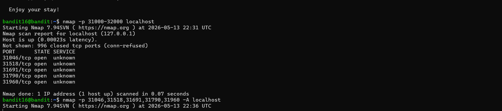
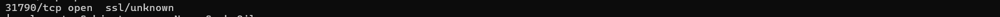
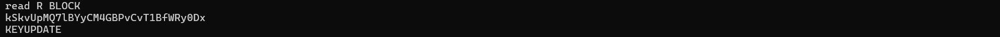
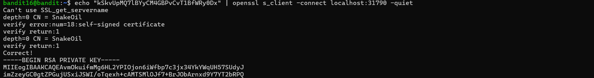
Objective:
Retrieve the password for the next level by identifying the line in passwords.new
that has been changed compared to passwords.old.
Concepts Learned:
diffCommands Used:
Explanation:
Bandit Level 17 focuses on file comparison. By running diff passwords.old passwords.new,
the command outputs the line that differs between the two files. This single line is the password
for Bandit Level 18. This exercise demonstrates how small changes in text can be efficiently
identified using standard Linux command-line tools.
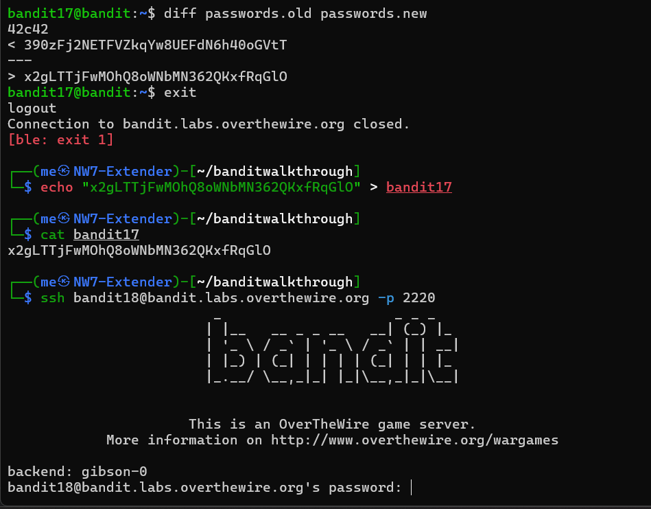
Objective:
Retrieve the password for the next level from the readme file in the home directory.
Note that the .bashrc file has been modified to immediately log you out upon SSH login.
Concepts Learned:
.bashrc can execute commands automatically upon loginCommands Used:
Explanation:
Bandit Level 18 demonstrates a way to bypass problematic .bashrc scripts that execute
automatically on login. By passing the command cat ~/readme directly to SSH, the shell
does not start interactively, so the logout command in .bashrc is not triggered. The output
of this command is the password for Bandit Level 19.
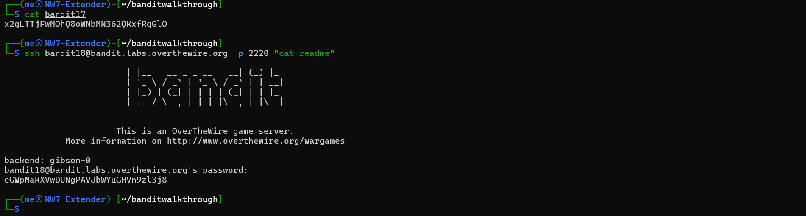
Objective:
Retrieve the password for the next level by using the setuid binary located in the home directory.
Executing the binary without arguments reveals how to use it. After using it, the password can be
found in /etc/bandit_pass.
Concepts Learned:
Commands Used:
Explanation:
Bandit Level 19 introduces setuid binaries, which execute with the privileges of the file owner.
Running the binary in your home directory without arguments shows how to interact with it. Once used
correctly, it allows you to access /etc/bandit_pass, which contains the password for
Bandit Level 20. This exercise demonstrates controlled privilege escalation and safe usage of
setuid programs.
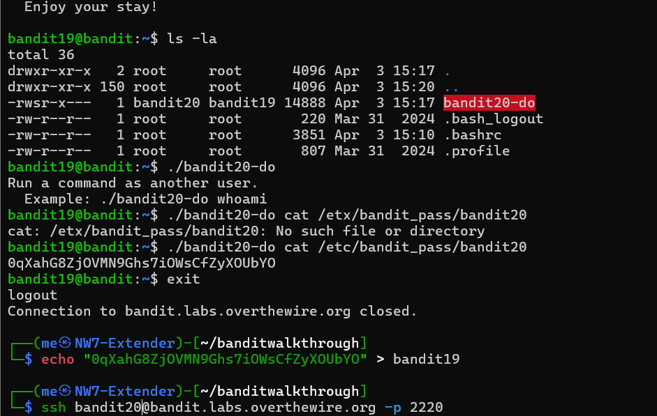
Objective:
Use the setuid binary in the home directory to connect to a localhost port.
The binary reads a line from the connection and checks it against the password from Bandit 20.
If correct, it returns the password for Bandit 21.
Concepts Learned:
Commands Used:
Explanation:
In Bandit Level 20, the setuid binary requires a port number as an argument. To retrieve the next password,
you first start a listener on the chosen port using nc -l -p <port> in a separate terminal.
Then, you run the setuid binary with ./suconnect <port>. The binary connects to your
listener, sends the previous level's password, and in response, the listener receives the password for
Bandit 21. This demonstrates how a local service can communicate with a client and transmit credentials
securely via a network connection.
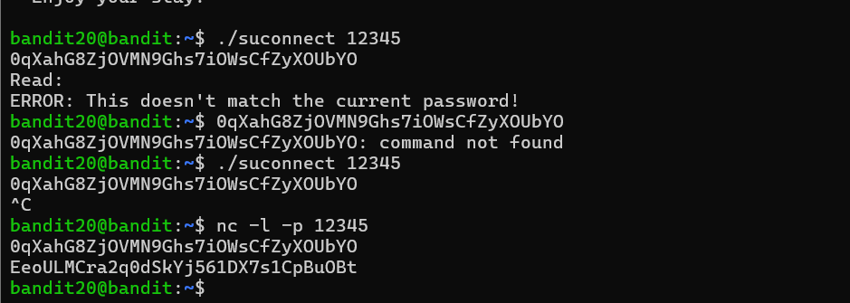
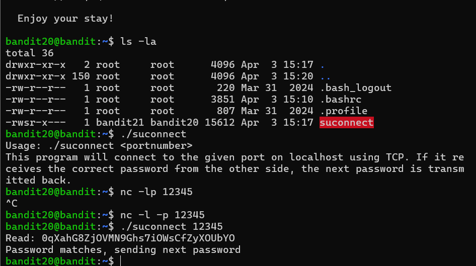
Objective:
Investigate a program that is running automatically via cron.
Examine the configuration in /etc/cron.d/ to see which command is being executed.
Concepts Learned:
cron scheduler/etc/cron.d/Commands Used:
Explanation:
Bandit Level 21 introduces scheduled tasks via cron. By listing the contents of
/etc/cron.d/ and inspecting the relevant file, you can see the exact command that is
executed automatically at regular intervals. Understanding cron job configurations is crucial for
system administration and security auditing, as these jobs can run scripts or programs with elevated
privileges without manual intervention.
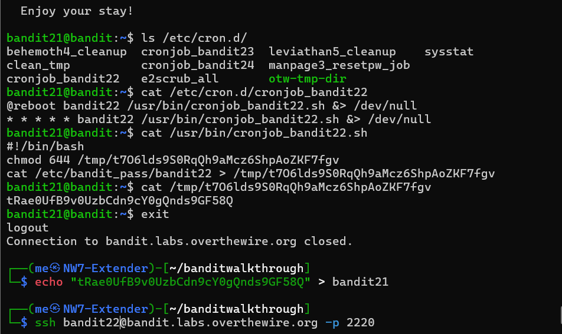
Objective: Add description for this level.
Concepts Learned:
Commands Used:
Objective: Add description for this level.
Concepts Learned:
Commands Used:
Objective: Add description for this level.
Concepts Learned:
Commands Used:
Objective: Add description for this level.
Concepts Learned:
Commands Used:
Objective: Add description for this level.
Concepts Learned:
Commands Used:
Objective: Add description for this level.
Concepts Learned:
Commands Used:
Objective: Add description for this level.
Concepts Learned:
Commands Used:
Objective: Add description for this level.
Concepts Learned:
Commands Used:
Objective: Add description for this level.
Concepts Learned:
Commands Used:
Objective: Add description for this level.
Concepts Learned:
Commands Used:
Objective: Add description for this level.
Concepts Learned:
Commands Used:
Objective: Add description for this level.
Concepts Learned:
Commands Used: